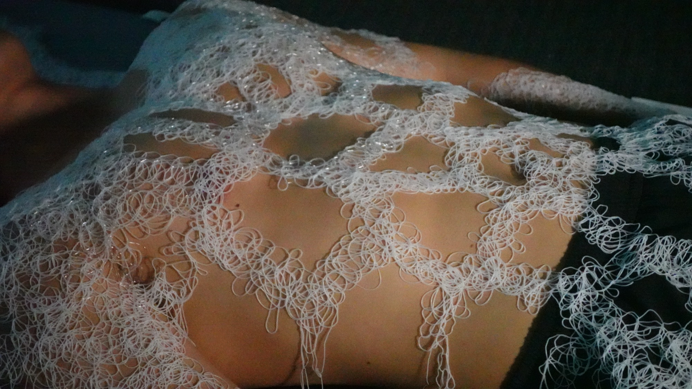
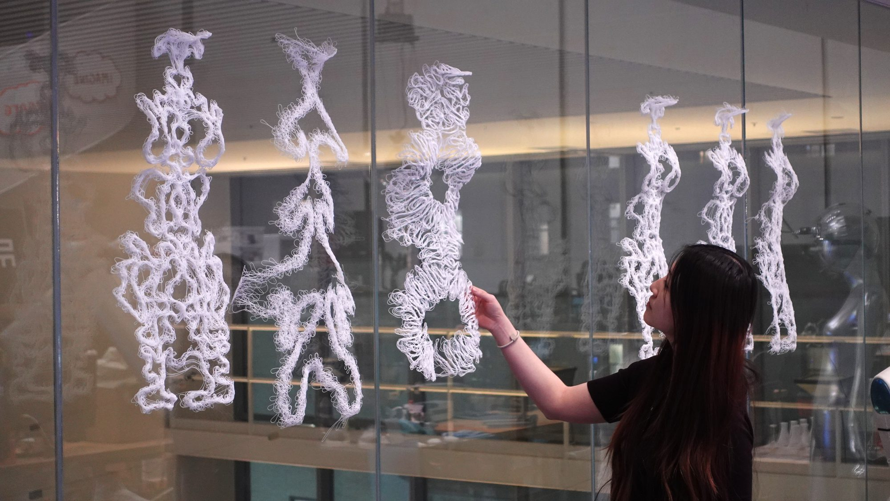
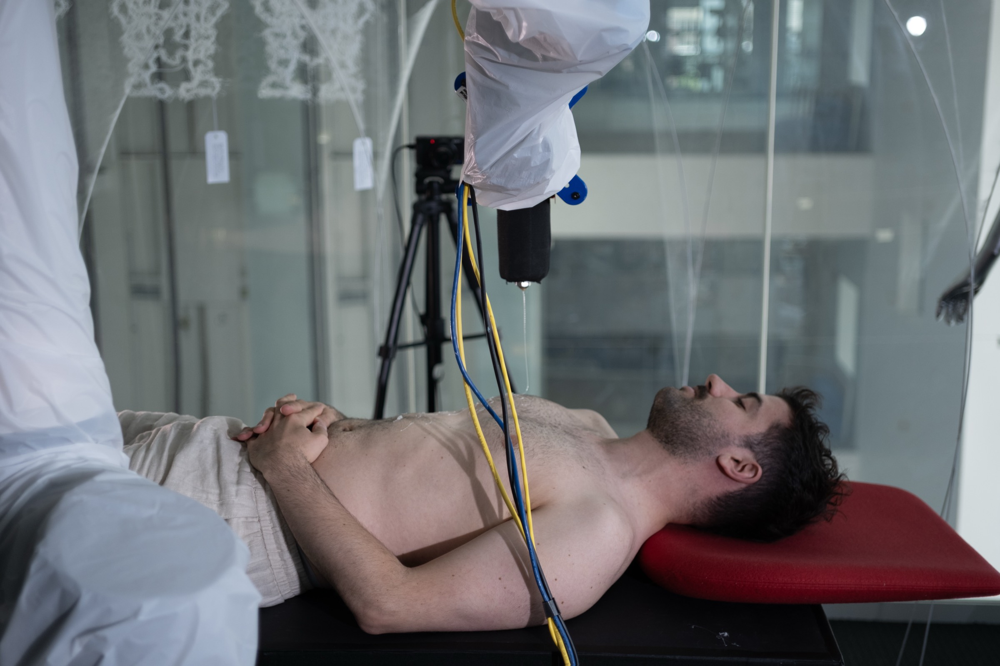

Second Skin
What if fashion were generated from bodily data, shaped by gravity,
and robotically fabricated directly onto the skin?

Second Skin explores a different way of making wearables, one in which the body becomes the starting point for fabrication rather than something a predetermined garment must accommodate.
A participant’s body is first scanned, creating a three-dimensional map that guides the movement of a robotic arm. Unlike conventional garment production, which typically begins with standardized pattern blocks, Second Skin begins with an individual body.
Through a custom-designed interface, participants choose the form and pattern of their wearable and explore how it relates to their own anatomy. They then lie beneath the robotic arm as their chosen design is translated into a fabrication path and woven directly onto their body. Nothing is cut, sewn, or fitted afterward. The wearable takes form on the body for which it is made.
As fibers fall through the air, gravity stretches, loops, and redirects them before they settle. The robotic path determines where material is released, while gravity and material behavior influence what it becomes. As a result, no two pieces are exactly alike.
Second Skin proposes clothing not as an object fitted to the body, but as a material formation that emerges from it.
One session, about an hour, and the piece is yours. The only one that will ever fit that way, because the body it was made on was measured once and never averaged.
Sessions run at the MIT Media Lab under COUHES protocol #2606002061.

How a piece is made
-
 Step 1 · Body scanning
Step 1 · Body scanning
A depth camera on the arm scans the torso, capturing the unique geometry of the body.
-
Step 2 · Pattern generation

The chosen input and outline are scaled onto the scan, and the chosen pattern is generated within the scaled geometry.
-
 Step 3 · Fabrication
Step 3 · Fabrication
The arm follows those generated toolpaths above the body. Fiber leaves the nozzle at 80 °C and lands as a warm sensation on the skin.

On to your body
This is a participatory on-body fabrication experience. Through an interactive design interface, you compose your own piece.
You are then scanned, and your composed design is personalized to the geometry of your own body. The piece is fabricated directly onto you.
Composed by you, made on you, and fit to you.
Sessions take about two hours. If you would like to participate, please fill out this form.
Your timelapse and photograph arrive by email. Did not receive after a week? Contact us.
Critical Matter Group
- Behnaz Farahi Critical Matter Group Director
- Annie Xing Harvard MDes
- Justin Wan MIT M.Arch
- Sergio Mutis MIT MAS
- Yuxiang Cheng MIT MAS